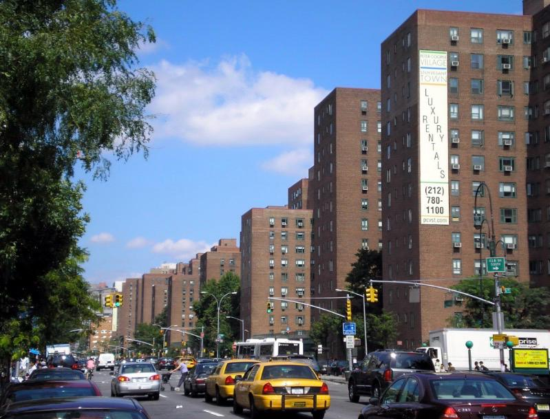
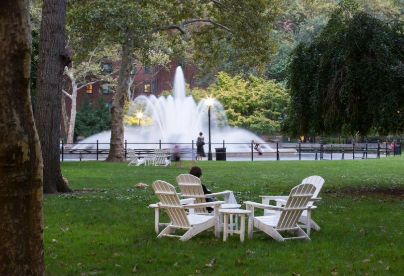
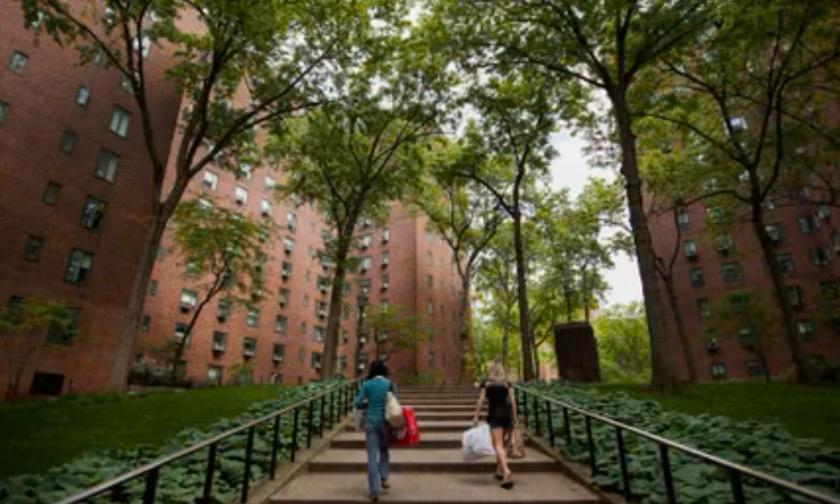

StuyTown is where I live, and I walk through it almost every day. Usually, I am either heading to class, going home, or running errands. For this project, I decided to slow down and observe my surroundings.
One of the first things I noticed was the repetition of the red brick buildings. The windows, entrances, and structures look similar, creating patterns throughout the neighborhood.

Walking between the buildings, I noticed how many trees and green spaces there are. The pathways feel different from the busy streets outside the neighborhood.

I noticed people walking their dogs, sitting on benches, cycling, and talking to one another. Everyone seemed to be following their own routine.

I continued walking toward the Oval. It felt like a central gathering space, surrounded by buildings and pathways. I stopped here for a few minutes to observe the activity around me.
This walk helped me notice details that I usually overlook. Although I live here and know the area well, documenting it made me look at my surroundings more carefully.